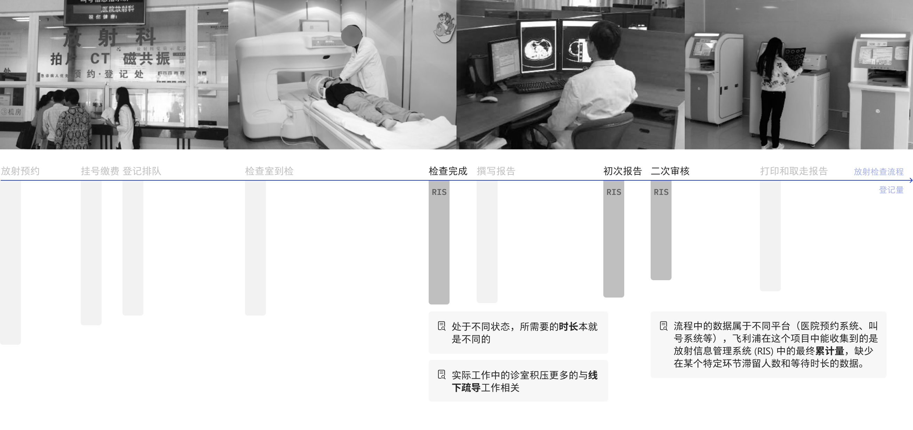
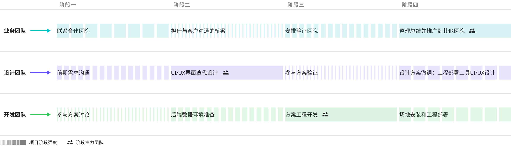
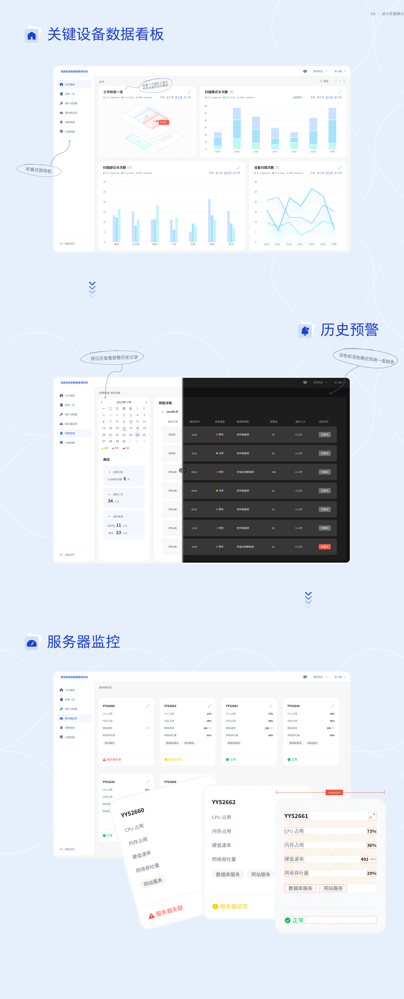
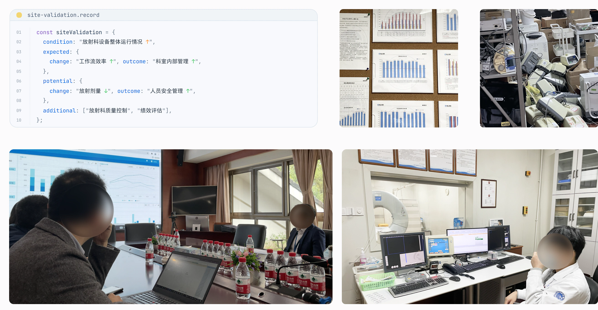
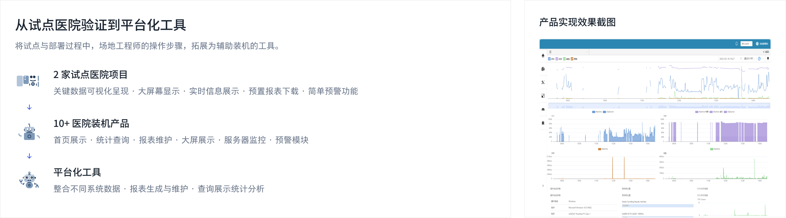

01
智慧医院政策引导医院管理方式朝向数字化、精细化
2021年3月，国家卫健委印发《医院智慧管理分级评估标准体系（试行）》，在“标准”中首次明确了医院智慧管理分级评估项目和要求。
复杂 B2B · 医疗产品 UX · 数据密集型产品
运行中的医院放射科每时每刻都在产生海量数据。 这个项目通过恰当的数据展示方式，呈现放射科当前的整体运行情况，并进行智慧科室管理、提高科室运行效率。
这个项目中设计主要面临的挑战，是理解放射科主任纷杂的工作管理内容，并在销售同事的辅助下，找到可以通过数字产品改进工作的切入点。最后在实地验证环节中快速验证设计方案、找到下一阶段设计迭代的方向。

01
2021年3月，国家卫健委印发《医院智慧管理分级评估标准体系（试行）》，在“标准”中首次明确了医院智慧管理分级评估项目和要求。
02
科主任的主要管理内容 = 人员管理 + 设备管理 + 医疗安全 + 教学科研 + ...
业务、设计和开发团队，在项目过程的不同阶段有着不一样的工作内容和工作密度。


与设备部门、信息部门和放射部门经理进行验证。

从两家试点医院到10+ 装机医院再到平台化产品，从满足场地需求到符合商业策略。
